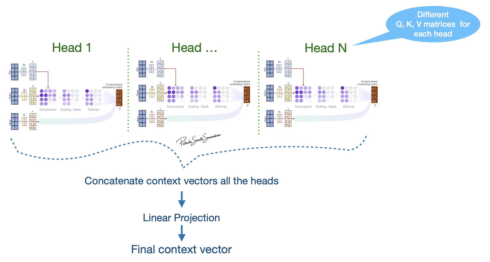

Building Blocks of GPT-2 LLM
Introduction
This lesson is designed to
Explore the architecture of LLMs with a special focus on GPT-2 model
Introduce fundamental components of LLM (i.e., building blocks of LLM architecture)
Provide understanding of basic LLM architecture
Objective
Identify key components (building blocks) of LLM (Decoder-only LLMs)
Understand
why each building block of a LLM important ?
how these building blocks work ?
Understand the dataflow and data parallelization of LLMs
At the end of the lesson, learners will gain knowledge to interpret the processes that enable LLMs to predict the next word from a sequence of input words
Prerequisites
Prerequisites
Basic understanding of Deep learning concepts and methods
Python programming
Basic understanding of PyTorch implementation
Introduction to Large Language Models (LLMs)
Objectives
Understand why the filed of language modeling needed LLMs.
Explore what LLMs are.
Understand how do LLMs differ from other machine learning approaches.
Language modeling (LM)

LM was introduced in early 1980s with the introduction of Recurrent Neural Networks (RNNs)
With the advances in the field of LM, more advance techniques to RNNs were introduced to
preserve gradients and maintain information (1997-2014; Gating mechanisms)
handle long-term memory (2015; Attention for RNNs)
manage variable-length input output sequences (2014; Encoder-decoder for RNNs)
Why does the LM field needs LLMs?
RNNs process inputs sequentially and the attention mechanism was not build into the core architecture
RNNs are slow and lead to scalability challenges
Transformer technology introduced in the paper “Attention Is All You Need” addressed this limitations in Modern RNNs
Transformer technology (therefore LLMs) eliminate sequential dependency:
all positions can be computed in parallel
Scalable model training and inference
LLMs
Transformer-based neural networks with large number of parameters (billions to trillions) that employ self-attention mechanisms and trained on vast amounts data (billions to trillions of tokens)
LLMs vs other ML approaches
Behavior of traditional ML approaches are specifically tied to the training objectives
LLMs exhibits capabilities that were not explicitly trained
i.e., Simple training objectives lead to complex capabilities
e.g., LLM’s ability to translate despite never being specifically trained for translation
These capabilities are referred “Emergent Behavior” of LLMs
This complexity emerges from:
Large scale + rich data + powerful architecture
Emergent mechanism is still not fully understood
Anatomy of a LLM

Tokenizer
Embedding layer
Transformer block
Self-attention layer
Feedforward neural network
Language modeling head (LM head)
GPT - Generative Pretrained Transformer model
Objectives
Understand what GPT is.
Explore main components (building blocks) of GPT-2 models
Generative: The model can generate tokens auto-regressive manner (generate one token at a time)
Pretrained: Trained on a large corpus of data
Transformer: The model architecture is based on the transformer, introduced in the 2017 paper “Attention is All You Need” (Self-Attention Mechanism)
GPT-2
Original publication: “Language Models are Unsupervised Multitask Learners”
GPT-2 original publication lists four models
Smallest GPT-2 model:
17 million parameters; 12 transformer blocks; Model dimensions: 768
Largest GPT-2 model:
1542 million parameters; 48 transformer blocks; Model dimensions: 1600

GPT-2 model variants and their components
Component |
Default(Small) |
Medium |
Large |
XL |
|---|---|---|---|---|
1. Tokenizer (Size of Vocabulary) |
50,257 |
50,257 |
50,257 |
50,257 |
2. Embedding layer (dimensions) |
786 |
1024 |
1280 |
1600 |
3. Transformer block |
12 layers, 12 heads |
24 layers, 16 heads |
36 layers,20 heads |
48 layers, 25 heads |
4. LM head (Output dimensions) |
50,257 |
50,257 |
50,257 |
50,257 |
Introduction to tokenization
Objectives
Explore what tokenization is and why it is important.
Understand how tokenizer process its input text
Tokenizers
What is tokenization?
Tokenizers take text as input and generate a sequence of integer representations of input text
Why it is important?
This serves as the foundation for converting text to numerical representations that deep learning models can process
Tokenizers: Text to sub-word units (tokens)
Tokenizers process these input text by converting them into discrete sub-word units
i.e, Split input test in to discrete sub-word units
These “discrete sub-word units” are tokens
Token are mapped to corresponding Token IDs using the model vocabulary
Tokenization step-by-step
Tokenizer accepts text
cat sat on theas inputSplit test into tokens:
cat,sat,on,theTokenizer split text into sub-words (tokens). In this case, sub-words from the tokenizer are equal to words in the text
Tokenizer uses model’s vocabulary as a lookup table to map tokens to token-IDs (integer IDs)
Vocabulary: A dictionary of unique tokens and unique numerical identifiers assigned to each token (Token ID)
This provides a consistent mapping system that converts variable-length text into fixed numerical representations
Return corresponding token-IDs of the tokens from input text
Vocabulary is build from training data by mapping each unique token to a token ID, with special tokens added to handle unknown words and document boundaries, enabling LLMs to process diverse text inputs effectively. The vocabulary size is managed to balance expressiveness with computational efficiency

GPT-2 tokenizer
Text to Token-IDs
from transformers import AutoTokenizer
tokenizer = AutoTokenizer.from_pretrained("gpt2")
print(f"Length of the vocabulary: {len(tokenizer)}")
sentence = "cat sat on the"
token_ids = tokenizer.encode(sentence)
print(f"Token IDs of the sentence '{sentence}': {token_ids}")
decoded_sentence = tokenizer.decode(token_ids)
print(f"Decoded sentence: {decoded_sentence}")
Text to subword units
summarization_token_ids = tokenizer.encode("summarization")
print("Token IDs for word `summarization`:", summarization_token_ids)
print("Mapping of tokens to token IDs:")
for token_id in summarization_token_ids:
print(f"'{tokenizer.decode(token_id)}' -> {token_id}")
Output
Text to Token-IDs
Length of the vocabulary: 50257
Token IDs of the sentence 'cat sat on the': [9246, 3332, 319, 262]
Decoded sentence: cat sat on the
Text to subword units
Token IDs for word `summarization`: [16345, 3876, 1634]
Mapping of tokens to token IDs:
'sum' -> 16345
'mar' -> 3876
'ization' -> 1634
Introduction to embedding
Objectives
Understand what embedding is and why it is important
Explore how embedding layers in LLMs process tokens
Token embedding
What is token embedding?
Token embedding is the process of converting discrete tokens (specifically token-IDs) into vectors
These vectors can be represented in a high-dimensional space
Token ID -> vector with length
N(points in N-dimensional space)
Representing tokens in a high-dimensional space enables to effectively capture complex patterns and relationships
What token embedding is important?
Token-IDs are just arbitrary integers assigned during tokenization that do not have mathematical relationship between these integers
Tokens are discrete numerical labels with no geometric or relational structure
Token embedding convert these numerical labels to structured representations - vectors (points in a high-dimensional space) in a way that captures the relationships between tokens
In this high-dimensional space, semantically related tokens like “dog”, “cat”, “animal” cluster together
This structure is learned during model training process so that words with similar contextual roles have similar vector representations (similarity between vectors represent relationships between tokens)
Demo
Explore token embeddings (Word2Vec embeddings):
Word2Vec embedding was widely used before the introduction of LLM technology
 Figure shows that the words with similar roles in natural language cluster together when represented in high-dimensional space
Figure shows that the words with similar roles in natural language cluster together when represented in high-dimensional space
Python implementation
import gensim.downloader as api
from sklearn.decomposition import PCA
import matplotlib.pyplot as plt
from mpl_toolkits.mplot3d import Axes3D
# Download and load the pre-trained Google News model
wv = api.load('word2vec-google-news-300')
print(f"Dimensions of 'king' embeddings: {wv['king'].shape}")
print(f"First 10 elements of 'king' embeddings: {wv['king'][:10]}")
similar_words = wv.most_similar('king', topn=3)
[print(f"{word}: {similarity:.4f}")for word, similarity in similar_words]
print(similar_words)
def get_3d_projections(word_list, wv):
# Extract embeddings for the given words
print("Word List:", word_list)
embeddings = [wv[word] for word in word_list]
# Apply PCA to reduce dimensions to 3D
pca = PCA(n_components=3)
projections = pca.fit_transform(embeddings)
return projections
def plot_3d_projections(projections, words):
fig = plt.figure(figsize=(8, 6))
ax = fig.add_subplot(111, projection='3d')
for i, word in enumerate(words):
x, y, z = projections[i]
ax.scatter(x, y, z, label=word)
ax.text(x, y, z, word, fontsize=10)
ax.set_title("3D PCA Projection of Word2Vec Embeddings")
ax.set_xlabel("PC1")
ax.set_ylabel("PC2")
ax.set_zlabel("PC3")
#plt.legend(loc='upper left')
#plt.tight_layout()
plt.show()
words = [word for word, _ in similar_words]
words.extend(["software", "internet", "web" ])
reduced_embeddings = get_3d_projections(words, wv)
plot_3d_projections(reduced_embeddings, words)
Token embeddings in LLMs
Tokenizer in GPT-2 smallest model has a vocabulary of 50257 tokens
This GPT-2 tokenizer maps tokens to integers 0-50256 with no mathematical relationship in those assignments
For example, tokenizer maps input -
cat sat on theto tokens[9246, 3332, 319, 262]that do not have inherent relationship between these numbers themselvesToken embeddings convert these arbitrary Token-IDs into dense vectors in a continuous space of 768 dimensions
Now
cat sat on thearen’t just different numbers—they’re points in a high-dimensional space where the similarity between vectors has meaningCapturing semantic meaning through token embeddings is learned during LLM pre-training process (detailed later)
GPT-2 Token embeddings: Step-by-Step Breakdown
Initiate a learnable matrix (dimensions
[vocab_size × embedding_dim])Each row represents one token’s embedding vector
Initiate the matrix with small random values (e.g., -2.84 to 1.58) to break symmetry
if all embeddings were identical, tokens couldn’t differentiate during training
As the model processes training examples, it makes predictions using these random embeddings
Prediction errors generate gradients that flow back through the network to the embedding layer
Token embeddings are optimize through backpropagation (Tokens appearing in similar contexts receive similar updates)
Through thousands of iterations in the pre-training process, random vectors evolve into meaningful representations where “cat” and “dog” cluster together
The final optimized embeddings encode semantic relationships learned entirely from the training data patterns
Explore LLM token embeddings
Embedding Dimensions:
from transformers import AutoModelForCausalLM
model = AutoModelForCausalLM.from_pretrained("gpt2",)
# Access the word token embedding layer
wte = model.transformer.wte
# Get vocabulary size and embedding dimension
print(f"Vocabulary Size: {wte.num_embeddings}; Embedding Dimension: {wte.embedding_dim}")
# The embedding matrix is stored in the 'weight' attribute
print(f"Shape of the embedding matrix: {wte.weight.shape}")
LLM Embedding of made-up words:
text_rand = "rand_xyz"
rand_token_ids = tokenizer.encode(text_rand)
print(f"Token IDs for text '{text_rand}': {rand_token_ids}")
print(f"Decoded text: {tokenizer.decode(rand_token_ids)}")
print()
# Use evaluation mode and not gradient calculation (training)
with torch.no_grad():
rand_token_embeddings = wte(torch.tensor(rand_token_ids))
print(f"Shape of the random token embeddings: {rand_token_embeddings.shape}")
print()
for i in range(len(rand_token_ids)):
print(f"Token {i}: {tokenizer.decode(rand_token_ids[i])} -> {rand_token_ids[i]};\n\tEmbeddings (first 5): {rand_token_embeddings[i][:5]}")
Output
Embedding Dimensions
Vocabulary Size: 50257; Embedding Dimension: 768
Shape of the embedding matrix: torch.Size([50257, 768])
LLM Embedding of made-up words
Token IDs for text 'rand_xyz': [25192, 62, 5431, 89]
Decoded text: rand_xyz
Shape of the random token embeddings: torch.Size([4, 768])
Token 0: rand -> 25192;
Embeddings (first 5D): tensor([-0.0456, -0.1112, 0.2527, 0.0098, -0.0464])
Token 1: _ -> 62;
Embeddings (first 5D): tensor([-0.0073, -0.0894, 0.0005, 0.0701, -0.0090])
Token 2: xy -> 5431;
Embeddings (first 5): tensor([-0.1123, -0.0957, 0.1115, -0.0743, 0.0958])
Token 3: z -> 89;
Embeddings (first 5D): tensor([-0.0141, -0.0427, 0.0941, -0.1052, 0.0594])
Position embeddings
Token embeddings process (converting unstructured token-ids to dense vectors) help capture relationships between tokens
Token embeddings process treats all positions equally
Token embedding alone makes models unable to distinguish token order without position information
Unable to distinguish between “dog bites man” and “man bites dog”
Position embeddings injects position information to embedding vectors
Embedding layer of LLMs
Token embeddings convert discrete token IDs into vector representations through a learnable matrix
Positional embeddings added to inject sequence order information to LLM embeddings
Embedding vectors (combined token and position embeddings) are parses to the next layer of the LLM - transformer layer/block

Source: transformer-explainer
Demo
Token and position embeddings:
Steps in the following script:
Tokenize input text
bank is near the river bankPass input to token and position embeddings
Calculate the similarity between 1st and last token
import torch
text_1 = "bank is near the river bank"
token_ids = tokenizer.encode(text_1)
for i in range(0,len(token_ids)):
print(f"Token {i}: {tokenizer.decode(token_ids[i])} -> {token_ids[i]}")
wte = model.transformer.wte # Token embedding
wpe = model.transformer.wpe # Position embedding
bank_1_id = token_ids[0]
wte_bank_1 = wte(torch.tensor(bank_1_id))
wpe_bank_1 = wpe(torch.tensor(0))
bank_2_id = token_ids[-1]
wte_bank_2 = wte(torch.tensor(bank_2_id))
wpe_bank_2 = wpe(torch.tensor(1))
cosine_sim = torch.nn.functional.cosine_similarity(
wte_bank_1 + wpe_bank_1,
wte_bank_2 + wpe_bank_2,
dim=0
)
print(f"Similarity: {cosine_sim.item():<.4f}") # Less than 1.0 - they're different!
The contextualization happens through the Transformer layers of the LLM by updating vector embeddings
Transformer update vectors from embedding layer to reflect the attention patterns that capture semantic relationships like “river” → “bank” (as in riverbank)
Output
LLM Embedding
## Notice the token 0 - "bank" and " bank" (with leading space)
Token 0: bank -> 17796
Token 1: is -> 318
Token 2: near -> 1474
Token 3: the -> 262
Token 4: river -> 7850
Token 5: bank -> 3331
Similarity: 0.5472
Transformer blocks
Objectives
Gain a basic understanding of Transformer technology and why it is important.
Explore transformer block and its main components
Limitations in traditional LM
RNN based traditional LM failed to track long-range dependencies like understanding how a word at the start of a paragraph relates to one at the end
RNN based models that processed words one by one (not scalable)
Ambiguity Resolution: Can’t differentiate specific linguistic problems like determining what “it” refers to in several sentences
Transformer technology
Transformer technology was introduced in the paper “Attention Is All You Need” to address several limitations in RNN based language modeling (LM)
Limitations and solutions
Limitation |
Solution |
|---|---|
Long-range dependencies |
Contextual Understanding via self-attention mechanism |
not scalable |
Parallel Processing of tokens |
specific linguistic problems |
Ambiguity Resolution via self-attention mechanism |
Why Is Transformer technology important?
Scalability:
Allows for massive scaling (in terms of parameters and training data size)
Leading to the “Large” in LLMs.
Architectural versatility:
The same underlying transformer block architecture is used across various state-of-the-art models (like GPT, Llama, and BERT)
Versatility performance/behaviour:
Enables models to generate coherent, contextually appropriate text and perform a wide range of tasks—from translation to coding—that were previously impossible for computers
Effective for both understanding and generating human language
Transformer model
Encoder and Decoder architecture

Originally developed specifically for machine translation
Encoder reads the source sentence (it) and encode it capturing full context
Decoder use encoded context and generate output one token at a time
Main characteristics of the original Transformer architecture:
Dual Submodules
Encoder and Decoder
Contextual Encoding
Capture the full context and meaning of the entire input text
Sequential Generation
Decoder takes these encoded vectors as input and generates the final output one token at a time
Using the encoder’s information to guide predictions
Self-Attention Layers
Both the encoder and decoder use self-attention mechanisms to capture long-range dependencies
Wide adaption of decoder transformers
Models like GPT (Generative Pretrained Transformer) discarded the encoder to focus solely on the decoder
Decoder models are autoregressive - feed their own previous outputs back in as inputs
This design is allows the model to write coherent, naturally optimized for text generation
Generate continuous text—from poetry to code—by predicting one token at a time
Warning
This lesson only focusses on the decoder transformers:

Danger
“Transformer” refer to the “Decoder” from this point onwards (in this lesson)
What is a Transformer block?
Transformer block is the fundamental architectural unit of a LLMs
LLMs - constructed by stacking these blocks on top of one another
Each block processes the input it receives from the previous layer and passes the result to the next
Stacked transformer blocks progressively refining the model’s understanding of the text

Main Components of a transformer block
Attention mechanism
Feed Forward neural Network
Warning
Following concepts on transformer are not discussed in this lesson
Normalisation
Layer normalisation
Root Mean Square Layer Normalization
Pre-LayerNorm or Post-LayerNorm
Residual connections
Self-attention mechanism
Objectives
Gain a basic understanding of self-attention mechanism
Explore how attention weights are calculated & how context vector is generated.
What is self-attention mechanism?
Self-attention: create a new, enriched representation (context vector) by incorporating information from all token embeddings in the sequence
Two main steps mechanism:
Scoring relevance (“attending to”/”considering” all tokens) & calculate attention weights (relevance scores)
Combine attention weights and generate context vector (new enriched representation)
Context vector (context-aware representation / enriched representation):
Captures the specific meaning of a token embeddings within its surrounding embeddings
Allow the model to understand relationships and dependencies between words, regardless of how far apart they are in the sentence

Understanding self-attention with Q, K, V weight matrix
Overview of self-attention with Q, K, V weight matrix
Note
Key concepts of attention mechanism
Q (Query), K (Key) and V (Value) roles input token embeddings play in attention mechanism
Q, K, V projection via learnable projection matrices (\(W_{k}\), \(W_{q}\), \(W_{v}\))
Attention scores and Attention weights
Context vectors
 Source (modified): transformer-explainer
Source (modified): transformer-explainer
Queries (Q), Keys (K), and Values (V)
Three roles of input token embeddings: Queries (Q), Keys (K), and Values (V):
Input token embeddings play three distinct roles in the attention mechanism
Queries (Q) “attend” to other vectors in the input sequence and serve as starting points to generate context vectors
Keys (K) gets compared to (matched with) Queries (Q) when calculating attention scores (relevance scores)
Values (V) serve as “reference values” that summarize scores from all-vs-all Q and K matching
Q, K, V projection:
First step in attention mechanism is to project Q, K, V embeddings to \(𝑄_{𝑚𝑎𝑡𝑟𝑖𝑥}\), \(K_{𝑚𝑎𝑡𝑟𝑖𝑥}\) and \(V_{𝑚𝑎𝑡𝑟𝑖𝑥}\) representations via a learnable projection matrices
\(𝑄_{𝑚𝑎𝑡𝑟𝑖𝑥}\): Vectors that “attend” to other vectors in the input sequence. (Actual vectors that are used as queries for the “comparison / attention”)
\(𝐾_{𝑚𝑎𝑡𝑟𝑖𝑥}\): Vectors that get compared to queries
\(V_{𝑚𝑎𝑡𝑟𝑖𝑥}\): Vectors that are used to combine values from previous step and generate context vector
\(𝑄_{𝑚𝑎𝑡𝑟𝑖𝑥}\), \(K_{𝑚𝑎𝑡𝑟𝑖𝑥}\) and \(V_{𝑚𝑎𝑡𝑟𝑖𝑥}\) have similar dimensions to Q, K, V embeddings, but the values in these matrices can get updated during the model training (due to the learnable projection matrices: \(W_{q}\), \(W_{k}\) and \(W_{v}\))
Learnable projection matrices: \(W_{q}\), \(W_{k}\) and \(W_{v}\)
Without these projection matrices, the relationship between embeddings would be static
The learnable matrices ensure that the attention mechanism is dynamic and allows \(𝑄_{𝑚𝑎𝑡𝑟𝑖𝑥}\), \(K_{𝑚𝑎𝑡𝑟𝑖𝑥}\) and \(V_{𝑚𝑎𝑡𝑟𝑖𝑥}\) get updated in model training
Allow the model to learn how to interpret embeddings differently depending on their context in the input sequence
Learnability allow the model to discover and optimize complex linguistic patterns during training
Attention weights:
Attention weights are calculated by:
Multiplies the Query vectors by the all the Key vectors in the sequence
Scale these scores
Convert scaled scores to probabilities
These probabilities (attention weights) help model determine how much focus the current token should put on other tokens
Context vector
Once attention weights are calculated, the model uses them to aggregate information.
The result is a new, enriched vectors that contain context from the relevant parts of the sequence
Understanding attention equation (scaled Dot-Product Attention)
Attention scores: (\({QK^T}\))
Attention weights: \(softmax(\frac{QK^T}{\sqrt{d_k}})\)
Context vector calculation: \(softmax(\frac{QK^T}{\sqrt{d_k}})*V\)
Attention weights calculation: \(softmax(\frac{QK^T}{\sqrt{d_k}})\)
Three stage Attention weights calculation process:
Stages 1: Calculate attention score with
dot product(\({QK^T}\))Stage 2: Scaling (\(\frac{QK^T}{\sqrt{d_k}}\))
Stage 3: Calculate “Attention weights” (\(softmax(\frac{QK^T}{\sqrt{d_k}})\))

Stages 1: Calculate attention score with dot product (\({QK^T}\)):
Provides unscaled attention score (initial relevance scores) - A higher dot product means the two tokens are more aligned (similar context)
Indicates how aligned vectors in \(𝑄_{𝑚𝑎𝑡𝑟𝑖𝑥}\) with vectors in \(𝐾_{𝑚𝑎𝑡𝑟𝑖𝑥}\)
i.e., how much focus \(𝑄_{𝑚𝑎𝑡𝑟𝑖𝑥}\) vectors should put on \(𝐾_{𝑚𝑎𝑡𝑟𝑖𝑥}\) vectors
Matrix manipulation enables simultaneously compare all the vectors in \(𝑄_{𝑚𝑎𝑡𝑟𝑖𝑥}\) to \(𝐾_{𝑚𝑎𝑡𝑟𝑖𝑥}\)
Stage 2: Scaling (\(\frac{QK^T}{\sqrt{d_k}}\)):
Scaled attention scores
Help avoid high-values in attention score and stabilize gradients
Stage 3: Calculate “Attention weights” (\(softmax(\frac{QK^T}{\sqrt{d_k}})\)):
Apply
softmaxfunction to scaled attention scores and calculate “Attention weights”softmaxfunction makes values to be positive and sums up 1 (convert to probabilities)i.e., Convert attention scores to attention weights (probabilities) what shows “relative importance” \(𝑄_{𝑚𝑎𝑡𝑟𝑖𝑥}\) vectors put on \(𝐾_{𝑚𝑎𝑡𝑟𝑖𝑥}\) vectors
Main Stages: \(softmax(\frac{QK^T}{\sqrt{d_k}})*V\)
Multiply these attention weights by the Value vectors (\(V_{𝑚𝑎𝑡𝑟𝑖𝑥}\)) and produce final context vector

\(𝑊_{𝑡ℎ𝑒}\): To what extent token “the” attend to (focus on) each input token (attention weights)
\(𝑉_{𝑚𝑎𝑡𝑟𝑖𝑥}\): Representation of input token embedding matrix
Masked Attention
Objectives
Understand what masked Self-Attention is and how it is applied
What is Masked Self-Attention?
Mechanism specific to the decoder blocks of a Transformer (like GPT).
Restricts the model’s to “only pay attention to previous token embeddings” when it is processing a specific token in the sequence
Masks model’s ability to pay to any future token embeddings
Why is it Important?
Without mask |
With mask |
|
|---|---|---|
Attention mechanism |
Exposed to future tokens |
Not exposed to future tokens |
Training & Inference |
Attend to future tokens |
Predict future tokens |
Prevents “Cheating” During Training
During training, model should learn how to predict the next token without “peeking” into the future
Masked attention ensures the model relies solely on the past to predict the future
Autoregressive text generation
Key to enable sequential generation autoregressive text generation (predicting the next word)
Forces the model to generate text one token at a time without peaking into the future tokens (model predicts the next word based only on past context)
Autoregressive text generation continues by feeding the output of one step as the input for the next, which is essential for creating coherent sentences.
Masking during the attention mechanism
When is the mask applied?
Mask is applied to scaled attention scores
Masked attention scores are used in the Softmax function
Ensure that the scaled attention scores sums to 1 over a restricted set of tokens

How to apply attention mask?
Mask: Set upper triangle values of the attention matrix to negative infinity
\(softmax(\frac{QK^T}{\sqrt{d_k}} + M)*V\)

Important
Causal Attention (Causal Masking)
In decoder transformer models like GPT:
Setting upper triangle values of the attention matrix to negative infinity is referred as Causal Attention (Causal Masking)
Causal Attention describes the behavioral constraint
Model must be causal, i.e., respect the sequence of tokens as they appear in time
Masked Attention describes the technical implementation
Model uses a mathematical mask (upper triangle of matrix with negative infinity)
Warning
Masking is a broader term
“Mask” can be applied to tokens for reasons unrelated to causality
Padding Masks:
Ignoring filler words (Used to ignore ‘[PAD]’ tokens)
Used in both encoder and decoder transformers
Masked Language Modeling:
Models like BERT use “Masked Language Modeling” to hide random words in the middle of a sentence to force the model to guess them
Masking process: Replace a small percentage (e.g., 15%) of input tokens with a special [MASK] token
Objective: To teach the model to understand the relationship between words by “filling in the blanks”
Multi-head self-attention
Objectives
Understand what Multi-head self-attention is and why it is important
Explore how it implemented in a transformer block
What is Multi-head attention
Multi-head attention divides the attention process into multiple independent parallel instances
Each parallel processes is called an “attention head”
Extend attention mechanism to multiple parallel processes
Why is it important?
Independent parallel attention heads allow the model to focus on different aspects of the input simultaneously
Help model recognize more intricate and nuanced patterns in the text than a single-head attention mechanism
E.g., One head might capture grammatical structure while another captures semantic meaning
Multi-head attention mechanism

Independent Projections using multiple sets of learnable weight matrices (\(W_{q}\), \(W_{k}\), \(W_{v}\)) creates distinct Query, Key, and Value matrices for each head
Each head executes attention mechanism in parallel generate multiple context vectors

Concatenation:
The output vectors from all the parallel heads are joined (concatenated) together to form a single, longer vector
Final Linear Projection:
Combine the information from all heads into the final output dimension required by the next layer
Note
In efficient implementations, rather than literally stacking separate layers, Multi-head attention is often achieved by projecting the input into a large dimension and then mathematically “splitting” it into heads for processing
Feedforward neural network (FNN)
Objectives
Understand the role of FNN in a transformer block and why it is important
Basic (simplest) overview
What is a single neuron?

Inputs: Always numerical, can have many inputs, often normalized
Weights: Numerical values associated with each input, determine importance
Bias: Provides flexibility for the neuron to activate even if all inputs are zero
What is a FNN?

Input layer: Receives the inputs, a neuron in a input layer represents a single input feature
Hidden layers: process the input data and extract complex features
Output layer: Produces the network’s prediction or output
FNN in the transformer block

FNN in the transformer block accepts context vector from the attention layer as the input
FNN expands this input into a much higher-dimensional space (often 4 times the size)
Explore each context vector in a richer representation space
i.e., Uncompresses the information within each context vector
Compressing it back down to model dimensions and generate enriched context vector
Why FNN is important?
Perform complex calculations and feature extraction on each token individually in a richer representation space
Capture more nuanced and rich feature representations within each context vector
Attention mechanism figures out where to look (routing information between words), the feed-forward network figures out what the words actually mean
Main features
FNN contains significantly more trainable weights (parameters) than the self-attention layer
Account for the bulk of the model’s storage
Stores the generalized patterns the model learned during training
Acting as the main engine for computation within each transformer block
Language Modeling Head (LM Head)
Objectives
Understand what a LM head is
Explore how LM head help predict the next token
What is LM head?
LM head projects the Context vector of the last token from the final block into the size of the model’s vocabulary and calculates a probability score for every possible next token
Enable next token prediction
Why LM head is important?
LM head is final component of a Transformer model, specifically in a LLM like GPT
Connects the output of the final Transformer block to the model’s vocabulary & help predict the next token
How is the LM head help predict next token

Input: Receives the “output vector” from the last Transformer block
E.g., if the model uses an embedding size of 3,072, the LM head takes in a vector of size 3,072 for each token.
Maps this input vector to a much larger vector equal to the size of the model’s vocabulary (e.g., 50,257 for GPT-2)
These outputs are raw, unnormalized scores called
logits
Convert
logitsto probability scores via softmax functionEmploy a sampling strategy to select the next token prediction
Coding
Custom LM-head
Steps:
Get Logits from the Language Modeling Head
Implement Temperature Scaling
Implement Top-K Sampling
Extract probabilities for Top-K
def lm_head(model, last_token_context_vector, temperature=0.7, k=50):
# Get Logits from the Language Modeling Head
## Project matrix for d_model (model dimension) to d_vocabulary (vocabulary dimensions)
lm_head = model.get_output_embeddings()
## Project last_token_context_vector and extract logits
logits = lm_head(last_token_context_vector)
# Implement Temperature Scaling
# Lower temp -> more confident, less random. Higher temp -> more random, creative.
scaled_logits = logits / temperature
# Implement Top-K Sampling
# We limit the sampling pool to the top 'k' most likely tokens
top_k_logits, top_k_indices = torch.topk(scaled_logits, k)
# Create a new tensor filled with a very low value (-inf)
filtered_logits = torch.full_like(logits, -float("Inf"))
# Scatter the top-k logits back into the new tensor at their original positions (Scatter the values along dimension 1)
filtered_logits.scatter_(0, top_k_indices, top_k_logits)
# Convert the filtered logits into a probability distribution
probabilities = F.softmax(filtered_logits, dim=-1)
return probabilities
Steps:
Decoding via multinomial sampling method to get the next token prediction
## Select top-n tokens from the probabilities calculated in the LM-head
def get_top_token(probabilities, tokenizer, top_n=1):
# Sample one token from the final probability distribution
# torch.multinomial is used for sampling from a discrete probability distribution.
final_token_id = torch.multinomial(probabilities, num_samples=top_n)
# Decode the selected token ID(s) to get the final word
final_token = tokenizer.decode(final_token_id.tolist())
print(f"\n✅ Final Selected {top_n} Tokens: '{final_token}'")
return final_token
Note
Functions
lm_headandget_top_tokenused in GPT-2 pre-trained end to end exercise
Pre-trained GPT-2 model end to end
Objective
Explore Pre-trained GPT-2
Run input text - “cat sat on the” through Pre-trained GPT-2 and extract next token predictions
Load Pre-trained GTP-2 model
from collections import OrderedDict
from transformers import AutoModelForCausalLM, AutoTokenizer, pipeline
import torch
import torch.nn.functional as F
---------------------------------------------------------------------------
ModuleNotFoundError Traceback (most recent call last)
Cell In[1], line 2
1 from collections import OrderedDict
----> 2 from transformers import AutoModelForCausalLM, AutoTokenizer, pipeline
3 import torch
4 import torch.nn.functional as F
ModuleNotFoundError: No module named 'transformers'
%%capture
# Load pre-trained model and tokenizer
model_name = "gpt2"
# Load the tokenizer and model
tokenizer = AutoTokenizer.from_pretrained(model_name)
# Load the model
model = AutoModelForCausalLM.from_pretrained(model_name)
# Force model to use CPU
model = model.to("cpu")
# Set the model to evaluation mode
model.eval()
## Disable Dropout layers to ensure deterministic outputs
print("Model and tokenizer loaded successfully.")
print(f"Model: {model}")
Model and tokenizer loaded successfully.
Model: GPT2LMHeadModel(
(transformer): GPT2Model(
(wte): Embedding(50257, 768)
(wpe): Embedding(1024, 768)
(drop): Dropout(p=0.1, inplace=False)
(h): ModuleList(
(0-11): 12 x GPT2Block(
(ln_1): LayerNorm((768,), eps=1e-05, elementwise_affine=True)
(attn): GPT2Attention(
(c_attn): Conv1D(nf=2304, nx=768)
(c_proj): Conv1D(nf=768, nx=768)
(attn_dropout): Dropout(p=0.1, inplace=False)
(resid_dropout): Dropout(p=0.1, inplace=False)
)
(ln_2): LayerNorm((768,), eps=1e-05, elementwise_affine=True)
(mlp): GPT2MLP(
(c_fc): Conv1D(nf=3072, nx=768)
(c_proj): Conv1D(nf=768, nx=3072)
(act): NewGELUActivation()
(dropout): Dropout(p=0.1, inplace=False)
)
)
)
(ln_f): LayerNorm((768,), eps=1e-05, elementwise_affine=True)
)
(lm_head): Linear(in_features=768, out_features=50257, bias=False)
)
Set custom LM-head
Extract logits
Apply temperature and k-top sampling
Select final token predictions
def lm_head(model, last_token_context_vector, temperature=0.7, k=50):
# 1. Get Logits from the Language Modeling Head
lm_head = model.get_output_embeddings() #model.lm_head
logits = lm_head(last_token_context_vector)
# Implement Temperature Scaling
# Lower temp -> more confident, less random. Higher temp -> more random, creative.
scaled_logits = logits / temperature
# Implement Top-K Sampling
# We limit the sampling pool to the top 'k' most likely tokens
top_k_logits, top_k_indices = torch.topk(scaled_logits, k)
# Create a new tensor filled with a very low value (-inf)
filtered_logits = torch.full_like(logits, -float("Inf"))
# Scatter the top-k logits back into the new tensor at their original positions (Scatter the values along dimension 1)
filtered_logits.scatter_(0, top_k_indices, top_k_logits)
# Convert the filtered logits into a probability distribution
probabilities = F.softmax(filtered_logits, dim=-1)
return probabilities
## Select top-n tokens from the probabilities calculated in the LM-head
def get_top_token(probabilities, tokenizer, top_n=1):
# Sample one token from the final probability distribution
# torch.multinomial is used for sampling from a discrete probability distribution.
final_token_id = torch.multinomial(probabilities, num_samples=top_n)
# Decode the selected token ID(s) to get the final word
final_token = tokenizer.decode(final_token_id.tolist())
print(f"\n✅ Final Selected {top_n} Tokens: '{final_token}'")
return final_token
Run experiment
Run custom LM-head and extract top 5 predictions
input_text = "cat sat on the"
# Tokenize input text
input_ids = tokenizer(input_text, return_tensors="pt").input_ids
print(f"Input prompt: '{input_text}'")
all_token_hidden_states = get_all_hidden_states(model, input_ids)
last_token_rep = all_token_hidden_states[0][-1, -1, :]
probabilities = lm_head(model, last_token_rep)
top_tokens = get_top_token(probabilities, tokenizer, top_n=5)
Input prompt: 'cat sat on the'
Number of hidden state layers: 2
✅ Final Selected 5 Tokens: ' bench ground floor bed edge'
Next token prediction (via LM-head defined in the model)
with torch.no_grad():
outputs = model(input_ids)
print(f"\nModel Output length: {len(outputs)}")
print(f"\nModel Output Keys: {outputs.keys()}")
print(f"\nModel Output Logits Shape: {outputs.logits.shape}")
print(f"\nModel Output last token Logits Shape: {outputs.logits[-1, -1, :].shape}")
Model Output length: 2
Model Output Keys: odict_keys(['logits', 'past_key_values'])
Model Output Logits Shape: torch.Size([1, 4, 50257])
Model Output last token Logits Shape: torch.Size([50257])
# Get the logits for the last token position
next_token_logits = outputs.logits[-1, -1, :]
# Convert logits to probabilities
probs = torch.softmax(next_token_logits, dim=-1)
# Get the most probable next token
predicted_token_id = torch.argmax(probs).item()
predicted_token = tokenizer.decode([predicted_token_id])
print(f"Next token prediction (from default lm-head): '{predicted_token}'")
Next token prediction (from default lm-head): ' floor'
Dataflow across LLM
Objectives
Explore the data-flow and data parallelization in a LLM
Dataflow across the LLM

Single forward pass through LLM:
Tokenizer process input text to sub-word units represented in token-IDs (integers)
Embedding layer convert token-IDs into vectors (embeddings)
Stack of transformer blocks for sequential transformation and enriching context of all tokens
LM head: for probability calculation and next token prediction
Context Window
The maximum number of token the model can handle simultaneously in a single forward pass
Note
Dataflow Constraint: As the autoregressive loop adds more tokens, if the sequence length exceeds this window, the model must truncate or “forget” the earliest tokens, meaning they no longer contribute to the calculation of future predictions.
Autoregressive Loop: The model selects the next token based on these probabilities (decoding), appends it to the original input sequence, and feeds this new, longer sequence back into the start of the model to generate the subsequent token.
Data parallelization in LLM


Who is the tutorial for?
This lesson is for individuals with deep learning knowledge and want to have a basic overview of the architecture of LLMs. The lesson is designed not to dive deep into each component but to interpret the underline processes of LLM’s key components.